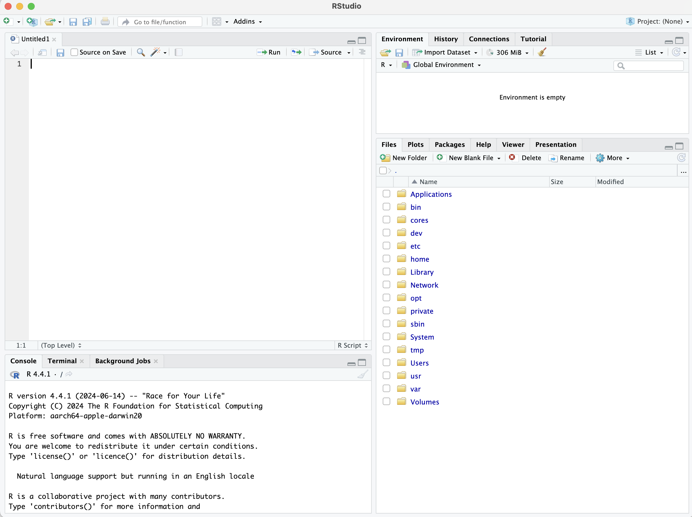
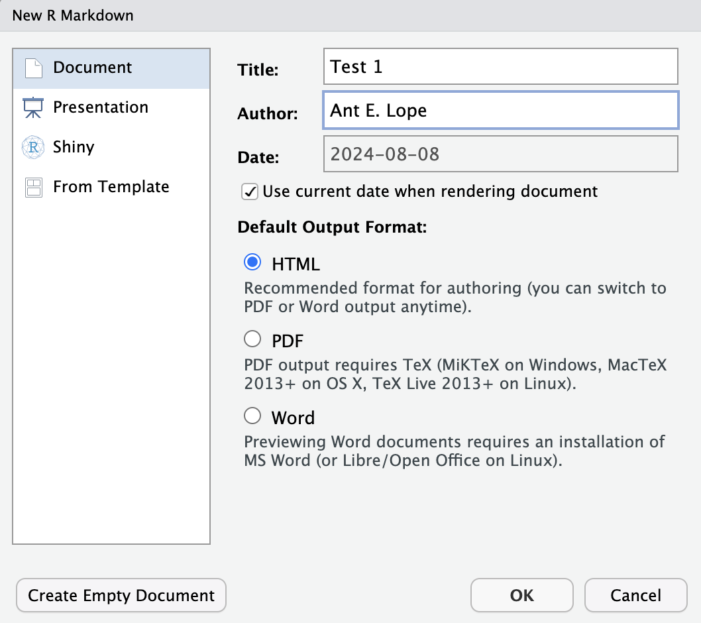
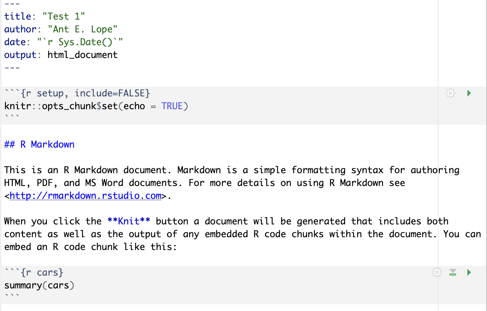
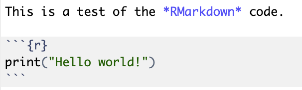
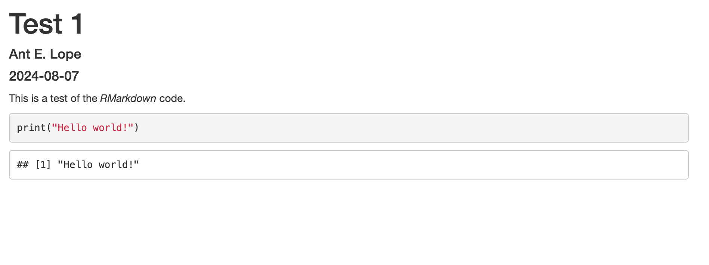
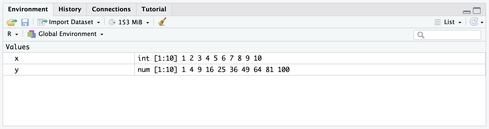
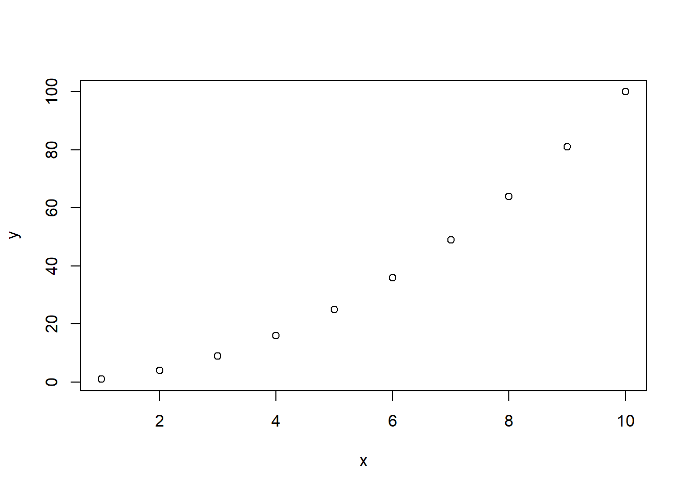
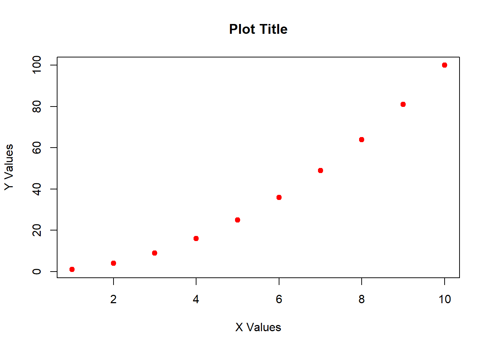

# make repeatable
set.seed(42)
# get 100 values from normal
x <- rnorm(100)1 Intro to R
In this class, we will be using R to perform statistical analyses. R is a free software program designed for use in a myriad of statistical and computational scenarios. It can handle extremely large datasets, can handle spatial data, and has wrappers for compatibility with Python, Bash, and other programs (even Java!).
1.1 Setup
First, we need to download R onto your machine. We are also going to download RStudio to assist with creating R scripts and documents.
1.1.1 Installing R
First, navigate to the R download and install page. Download the appropriate version for your operating system (Windows, Mac, or Linux). Note that coding will be formatted slightly different for Windows than for other operating systems. If you have a Chromebook, you will have to follow the online instructions for installing both programs on Chrome.
Follow the installation steps for R, and verify that the installation was successful by searching for R on your machine. You should be presented with a coding window that looks like the following, but may not be an exact match:
R version 4.4.1 (2024-06-14) -- "Race for Your Life"
Copyright (C) 2024 The R Foundation for Statistical Computing
Platform: aarch64-apple-darwin20
R is free software and comes with ABSOLUTELY NO WARRANTY.
You are welcome to redistribute it under certain conditions.
Type 'license()' or 'licence()' for distribution details.
Natural language support but running in an English locale
R is a collaborative project with many contributors.
Type 'contributors()' for more information and
'citation()' on how to cite R or R packages in publications.
Type 'demo()' for some demos, 'help()' for on-line help, or
'help.start()' for an HTML browser interface to help.
Type 'q()' to quit R.
>If that screen appears, congratulations! R is properly installed. If the install was not successful, please talk to your instructor and teaching assistant(s) for help with installation.
1.1.2 Installing RStudio
RStudio is a GUI (graphics user interface) that helps make R easier to use. Furthermore, it allows you to create documents in R, including websites (such as this one), PDFs, and even presentations. This can greatly streamline the research pipeline and help you publish your results and associated code in a quick and efficient fashion.
Head over the the RStudio download website and download “RStudio Desktop”, which is free. Be sure to pick the correct version for your machine.
Open RStudio on your machine. You should be presented with something like the following:

In RStudio, the top left window is always going to be our coding window. This is where we will type all of our code and create our documents. In the bottom left we will see R executing the code. This will show what the computer is “thinking” and will help us spot any potential issues. The top right window is the “environment”, which shows what variables and datasets are stored within the computers’ memory. (It can also show some other things, but we aren’t concerned with that at this point). The bottom right window is the “display” window. This is where plots and help windows will appear if they don’t appear in the document (top left) window itself.
1.1.3 Setting up the “native pipe” operator
There are two ways to type commands in R: in a “nested” fashion and in a “piped” fashion.
Let’s say that we have a random series of 100 numbers from a random normal distribution, which we can get by running the following:
Let’s say that we want to get the mean of these values and round these values to two decimal places for our final answer. To do this in a nested fashion, we would do the following:
# round mean of x
round(mean(x), 2)[1] 0.03This works pretty well, but it can get confusion with so many parentheses over each other. Thus, we can use the “pipe” method instead.
In RStudio, click on the tabs at the top of the screen to go to Tools > Global Options, and in the pop up screen select Code. On this screen, you should see a tick box for “Use native pipe operator”. Make sure this box is checked. Now, we can use CTRL + SHIFT + M to insert the “pipe” operator |>.
The pipe operator takes whatever came previous and puts it through the next command. For example, mean(x) could also be written as x |> mean(), where x would be placed inside of mean().
x |>
mean() |>
round(2)[1] 0.03As you can see, the above breaks things down into a more step-by-step fashion, and makes code easier to follow. We will be using this extensively in this course.
1.2 Creating an RMarkdown document
1.2.1 Setup
In this class, we will be creating assignments in what is called RMarkdown. This is a rich-text version of R that allows us to create documents with the code embedded. In RStudio, click the “+” button in the far top left to open the New Document menu. Scroll down this list and click on R Markdown.
A screen such as this will appear:

After entering a title and your name and selecting document in the left hand menu, click OK.

In the image above, we can see what a “default” RMarkdown script looks like after creating the file. At the top of the document, between all of the dashes, we have the yaml header that tells R what kind of document will be created, who the author is, and tells it to use today’s date. In this class, we will be saving documents as html as they are the easiest documents to create and save. These documents will include all of your code, text, and even any plots you may create!
Plain text in the document will be rendered as plain text in the document. (I.e., whatever you type normally will become “normal text” in the finished document). Lines preceded with # will become headers, with ## being a second level header and ### being a third level header, etc. Words can also be made italic by putting an asterisk on each side of the word (*italic*) and bold by putting two asterisks on each side (**bold**). URLs are also supported, with <> on each side of a URL making it clickable, and words being hyperlinked by typing [words to show](target URL).
We also have code “chunks” that are shown above. A code chunk can be manually typed out or inserted by pressing CTRL + ALT + I (Windows, Linux) or COMMAND + OPTION + I (Mac). Everything inside a “code chunk” will be read as R code and executed as such. Note that you can have additional commands in the R chunks, but we won’t cover that for now.
1.2.2 Using code chunks
In your computer, erase all information except for the yaml header between the dashes at the top of the document. Save your file in a folder where you want your assignment to be located. It is important you do this step up front as the computer will sometimes save in random places if you don’t specify a file location at the beginning. Don’t forget to save your work frequently!
After clearing the document, type the following at the top, exactly as shown. You can insert a code chunk (the {r} part framing the code with hashes before and after) by clicking CTRL+ALT+I (CMD+OPT+I on a Mac).

After typing this into the document, hit knit near the top of the upper left window. R will now create an HTML document that should look like this:

We can see now that the HTML document has the title of the document, the author’s name, the date on which the code was run, and a greyed-out box with color coded R code followed by the output. Let’s try something a little more complex. Create a new code chunk and type the following:
x <- 1:10This will create a variable in R, x, that is sequentially each whole number between 1 and 10. We can see this by highlighting or typing only the letter x and running that line of code by clicking CTRL + ENTER (Windows / Linux) or COMMAND + ENTER (Mac).
x [1] 1 2 3 4 5 6 7 8 9 10If you look at the top right window, you will also see the value x in the environment defined as int [1:10] 1 2 3 4 5 6 7 8 9 10. This indicates that x is integer data spanning ten positions numbered 1 to 10. Since the vector is small, it displays every number in the sequence.

Let’s create another vector y that is the squared values of x, such that \(y=x^2\). We can raise values to an exponent by using ^.
y <- x^2
y [1] 1 4 9 16 25 36 49 64 81 100Now we have the value y in the environment that is the square of the values of x. This is a numeric vector of 10 values numbered 1 to 10 where each value corresponds to a square of the x value. We can raise things to any value however, including \(x^x\)!
x^x [1] 1 4 27 256 3125 46656
[7] 823543 16777216 387420489 10000000000As we can see, since I didn’t “store” this value as a variable in R using <-, the value is not in the environment.
1.2.3 Plotting
Now, let’s try creating a plot. This is easy in R, as we just use the command plot.
plot(x = x, y = y)
By specifying the y and x components in plot, we can quickly generate a point plot. We can alter the visual parameters of this plot using a few different commands. I will outline these below with inline notes. Inline notes in the code can be made by using a # symbol before them, which basically tells R to ignore everything after the #. For example:
print("Test")[1] "Test"# print("Test 2")This prints the word Test, but doesn’t print Test 2.
Now let’s make the plot with some new visual parameters.
plot(x = x, # specify x values
y = y, # specify y values
ylab = "Y Values", # specify Y label
xlab = "X Values", # specify X label
main = "Plot Title", # specify main title
pch = 19, # adjust point style
col = "red") # make points red
1.2.4 Tab complete
RStudio allows for “tab-completing” while typing code. Tab-completing is a way of typing the first part of a command, variable name, or file name and hitting “tab” to show all options with that spelling. You should use tab completing because it:
- reduces spelling mistakes
- reduces filepath mistakes
- increases the speed at which you code
- provides help with specific functions
1.2.5 Help
At any point in R, you can look up “help” for a specific function by typing ?functionname. Try this on your computer with the following:
?mean1.3 Working with data
Throughout this course, we are going to have to work with datasets that are from our book or other sources. Here, we are going to work through an example dataset. First, we need to install libraries. A library is a collated, pre-existing batch of code that is designed to assist with data analysis or to perform specific functions. These libraries make life a lot easier, and create short commands for completing relatively complex tasks.
1.3.1 Libraries
In this class, there is one major library that you will need almost every week! First, we need to install this library:
tidyverse: this package is actually a group of packages designed to help with data analysis, management, and visualization.
NOTE: If you leave the install prompts in your RMarkdown document, it will not knit!
# run this code the first time ONLY
# DO NOT INCLUDE IN RMD FILE
# does not need to be run every time you use R!
# tidyverse has a bunch of packages in it!
# great for data manipulation
install.packages("tidyverse")
# if you ever need to update:
# leaving brackets open means "update everything"
update.packages()NOTE: The following is required in EVERY DOCUMENT that uses the tidyverse commands!
After packages are installed, we will need to load them into our R environment. While we only need to do install.packages once on our machine, we need to load libraries every time we restart the program!
library(tidyverse)── Attaching core tidyverse packages ──────────────────────── tidyverse 2.0.0 ──
✔ dplyr 1.1.4 ✔ readr 2.1.5
✔ forcats 1.0.0 ✔ stringr 1.5.1
✔ ggplot2 3.5.2 ✔ tibble 3.2.1
✔ lubridate 1.9.4 ✔ tidyr 1.3.1
✔ purrr 1.0.4
── Conflicts ────────────────────────────────────────── tidyverse_conflicts() ──
✖ dplyr::filter() masks stats::filter()
✖ dplyr::lag() masks stats::lag()
ℹ Use the conflicted package (<http://conflicted.r-lib.org/>) to force all conflicts to become errorsYou should have an output like the above. What this means is:
- The core packages that comprise the tidyverse loaded successfully, and version numbers for each are shown.
- The conflicts basically means that certain commands will not work as they used to because R has “re-learned” a particular word.
1.3.1.1 Conflicts
To clarify the conflicts, pretend that you can only know one definition of a word at a time. You may know the word “cola” as a type of soda pop or as a drink in general. However, in Spanish, “cola” refers to a line or a tail. While we can learn both of these definitions and know which one is which because of context, a computer can’t do that. In R, we would then have to specify which “cola” we are referring to. We do this by listing the package before the command; in this case, english::cola would mean a soda pop and spanish::cola would refer to a line or tail. If we just type cola, the computer will assume one of these definitions but not even consider the other.
We won’t have to deal with conflicts much in this class, and I’ll warn you (or help you) if there is a conflict.
1.3.2 Downloading data
Now, we need to download our first data set. These datasets are stored on GitHub. We are going to be looking at data from Dr. Cooper’s dissertation concerning Afrotropical bird distributions (Cooper 2021). This website is in the data folder on this websites’ GitHub page, accessible here.
# read comma separated file (csv) into R memory
# reads directly from URL
ranges <- read_csv("https://raw.githubusercontent.com/jacobccooper/biol305_unk/main/datasets/lacustrine_range_size.csv")Rows: 12 Columns: 10
── Column specification ────────────────────────────────────────────────────────
Delimiter: ","
chr (1): species
dbl (9): combined_current_km2, consensus_km2, bioclim_current_km2, 2050_comb...
ℹ Use `spec()` to retrieve the full column specification for this data.
ℹ Specify the column types or set `show_col_types = FALSE` to quiet this message.Alternatively, we can use the operator |> to simplify this process. |> means “take whatever you got from the previous step and pipe it into the next step”. So, the following does the exact same thing:
ranges <- "https://raw.githubusercontent.com/jacobccooper/biol305_unk/main/datasets/lacustrine_range_size.csv" |>
read_csv()Rows: 12 Columns: 10
── Column specification ────────────────────────────────────────────────────────
Delimiter: ","
chr (1): species
dbl (9): combined_current_km2, consensus_km2, bioclim_current_km2, 2050_comb...
ℹ Use `spec()` to retrieve the full column specification for this data.
ℹ Specify the column types or set `show_col_types = FALSE` to quiet this message.Using the |> is preferred as you can better set up a workflow and because it more closely mimics other coding languages, such as bash.
Let’s view the data to see if it worked. We can use the command head to view the first few rows:
head(ranges)# A tibble: 6 × 10
species combined_current_km2 consensus_km2 bioclim_current_km2
<chr> <dbl> <dbl> <dbl>
1 Batis_diops 25209. 6694. 19241.
2 Chamaetylas_poliophrys 68171. 1106. 68158.
3 Cinnyris_regius 60939. 13305. 53627.
4 Cossypha_archeri 27021. 6409. 11798.
5 Cyanomitra_alinae 78680. 34320. 63381.
6 Graueria_vittata 8770. 861. 8301.
# ℹ 6 more variables: `2050_combined_km2` <dbl>, `2050_consensus_km2` <dbl>,
# `2070_combined_km2` <dbl>, `2070_consensus_km2` <dbl>,
# alltime_consensus_km2 <dbl>, past_stable_km2 <dbl>We can perform a lot of summary statistics in R. Some of these we can view for multiple columns at once using summary.
summary(ranges) species combined_current_km2 consensus_km2 bioclim_current_km2
Length:12 Min. : 8770 Min. : 861.3 Min. : 3749
Class :character 1st Qu.: 24800 1st Qu.: 4186.2 1st Qu.: 10924
Mode :character Median : 43654 Median : 7778.1 Median : 31455
Mean : 68052 Mean :18161.8 Mean : 42457
3rd Qu.: 70798 3rd Qu.:18558.7 3rd Qu.: 62835
Max. :232377 Max. :79306.6 Max. :148753
2050_combined_km2 2050_consensus_km2 2070_combined_km2 2070_consensus_km2
Min. : 1832 Min. : 0.0 Min. : 550.3 Min. : 0.0
1st Qu.: 6562 1st Qu.: 589.5 1st Qu.: 6583.8 1st Qu.: 311.4
Median : 26057 Median : 6821.9 Median : 24281.7 Median : 2714.6
Mean : 33247 Mean :14418.4 Mean : 31811.0 Mean : 8250.5
3rd Qu.: 40460 3rd Qu.:18577.1 3rd Qu.: 38468.9 3rd Qu.:10034.4
Max. :132487 Max. :79236.2 Max. :129591.0 Max. :53291.8
alltime_consensus_km2 past_stable_km2
Min. : 0.0 Min. : 0.0
1st Qu.: 790.9 1st Qu.: 0.0
Median : 8216.8 Median : 0.0
Mean :15723.3 Mean : 127.3
3rd Qu.:19675.0 3rd Qu.: 0.0
Max. :82310.5 Max. :1434.8 As seen above, we now have information for the following statistics for each variable:
Min= minimum1st Qu.= 1st quartileMedian= middle of the datasetMean= average of the dataset3rd Qu.= 3rd quartileMax.= maximum
We can also calculate some of these statistics manually to see if we are doing everything correctly. It is easiest to do this by using predefined functions in R (code others have written to perform a particular task) or to create our own functions in R. We will do both to determine the average of combined_current_km2.
1.3.3 Subsetting data
First, we need to select only the column of interest. In R, we have two ways of subsetting data to get a particular column.
var[rows,cols]is a way to look at a particular object (varin this case) and choose a specific combination ofrownumber andcolumnnumber (col). This is great if you know a specific index, but it is better to use a specific name.var[rows,"cols"]is a way to do the above but by using a specific column name, likecombined_current_km2.var$colnameis a way to call the specific column name directly from the dataset.
# using R functions
ranges$combined_current_km2 [1] 25209.4 68171.2 60939.2 27021.3 78679.9 8769.9 232377.2 17401.4
[9] 51853.5 35455.1 23570.3 187179.1As shown above, calling the specific column name with $ allows us to see only the data of interest. We can also save these data as an object.
current_combined <- ranges$combined_current_km2
current_combined [1] 25209.4 68171.2 60939.2 27021.3 78679.9 8769.9 232377.2 17401.4
[9] 51853.5 35455.1 23570.3 187179.1Now that we have it as an object, specifically a numeric vector, we can perform whatever math operations we need to on the dataset.
mean(current_combined)[1] 68052.29Here, we can see the mean for the entire dataset. However, we should always round values to the same number of decimal points as the original data. We can do this with round.
round(mean(current_combined),1) # round mean to one decimal[1] 68052.3Note that the above has a nested set of commands. We can write this exact same thing as follows:
# pipe mean through round
mean(current_combined) |>
round(1)[1] 68052.3Use the method that is easiest for you to follow!
We can also calculate the mean manually. The mean is \(\frac{\sum_{i=1}^nx}{n}\), or the sum of all the values within a vector divided by the number of values in that vector.
# create function
# use curly brackets to denote function
# our data goes in place of "x" when finally run
our_mean <- function(x){
sum_x <- sum(x) # sum all values in vector
n <- length(x) # get length of vector
xbar <- sum_x/n # calculate mean
return(xbar) # return the value outside the function
}Let’s try it.
our_mean(ranges$combined_current_km2)[1] 68052.29As we can see, it works just the same as mean! We can round this as well.
our_mean(ranges$combined_current_km2) |>
round(1)[1] 68052.31.4 Your turn!
With a partner or on your own, try to do the following:
- Create an RMarkdown document that will save as an
.html. - Load the data, as shown here, and print the summary statistics in the document.
- Calculate the value of
combined_current_km2divided by2050_combined_km2and print the results. knityour results, with your name(s) and date, as an HTML document.
Let me know if you have any issues.